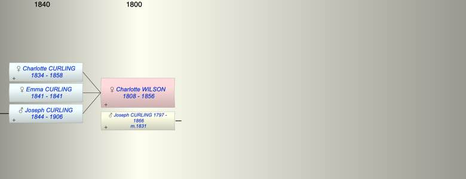

| [Index] |
| Charlotte Holbert WILSON (1808 - 1856) |
|  |
| b. 1808 |
| m. 25 Oct 1831 Joseph CURLING (1797 - 1866) at Brixton |
| d. 1856 aged 48 |
| Children (3): |
| Charlotte Wilson CURLING (1834 - 1858) |
| Emma Josephine CURLING (1841 - 1841) |
| Joseph James CURLING (1844 - 1906) |
| Grandchildren (3): |
| Events in Charlotte Holbert WILSON (1808 - 1856)'s life | |||||
| Date | Age | Event | Place | Notes | Src |
| 1808 | Charlotte Holbert WILSON was born | ||||
| 25 Oct 1831 | 23 | Married Joseph CURLING (aged 34) | Brixton | Note 1 | |
| 1834 | 26 | Birth of daughter Charlotte Wilson CURLING | |||
| 1841 | 33 | Birth of daughter Emma Josephine CURLING | |||
| 1841 | 33 | Death of daughter Emma Josephine CURLING | |||
| 31 Jan 1844 | 36 | Birth of son Joseph James CURLING | Lambeth | Note 2 | |
| 1856 | 48 | Charlotte Holbert WILSON died | |||
| Note 1: at St Mathew, Brixton both single by licence ex Ancestry PR |
| Note 2: ex 1861 census dob ex Freedom of City of London |
| Created on a Mac™ using iFamily for Mac™ on 8 Oct 2023 |